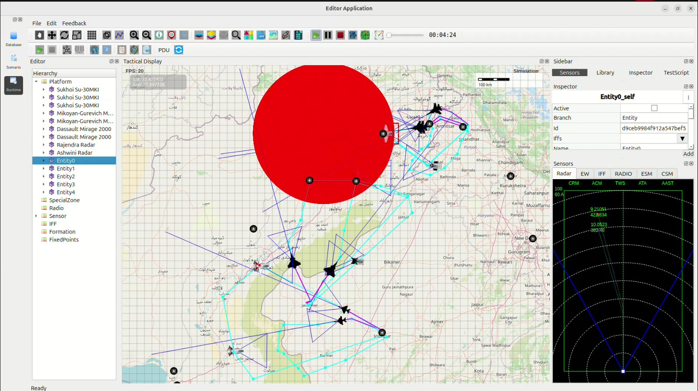

Indian Air Force Cross-Border Deep Strike Operation – Case Study
This case study documents a simulated offensive operation conducted by the Indian Air Force (IAF) into Pakistani territory. The mission demonstrates:
Multi-base coordination
Deep strike offensive capability
Radar evasion and suppression
Synchronized execution
Multi-platform fighter integration (Su-30MKI, MiG-21, Mirage 2000)
1. Mission Overview
The IAF launches a coordinated strike package from three major airbases:
Amritsar Airbase – Three Sukhoi Su-30MKI (Air Superiority + Strike Escort)
Jodhpur Airbase – One MiG-21 (Fast Interceptor + Tactical Disruption Role)
Jaisalmer Airbase – Two Dassault Mirage-2000 (Primary Precision Strike Fighters)
Mission objectives include:
Conduct precision bombing on high–value enemy targets across the border
Penetrate deep into Pakistani territory
Overwhelm enemy radar and air-defense networks
Maintain air superiority during ingress and egress
2. Strike Zone and Target Area
The large red circular region visible in the simulation represents the primary strike zone deep inside Pakistan.
This zone contains:
Forward air-defense installations
Radar stations and command nodes
Logistic hubs and ammunition depots
High-threat military infrastructure
Target markers such as Entity0, Entity1, Entity2, etc., indicate critical strike points within this zone.
3. Indian Aircraft Deployment & Ingress Paths
### Sukhoi Su-30MKI Group – Amritsar Sector
Leads the strike package and provides long-range escort.
Enters Pakistani airspace near the Lahore–Kasur axis.
Executes wide maneuver patterns to suppress enemy fighters.
### MiG-21 Group – Jodhpur Sector
Approaches from the southwest via the Rahim Yar Khan corridor.
Flies low-level penetration routes to distract radar.
Performs tactical harassment to support Mirage ingress.
### Mirage 2000 Group – Jaisalmer Sector
Serves as the primary precision bomber role.
Executes deep strike loops (cyan/purple flight paths).
Penetrates the central strike zone and deploys guided munitions.
4. Tactical Insights from the Simulation
The simulation reveals key strategic observations:
Multi-Axis Entry splits enemy air-defense focus.
Large Penetration Depth showcases operational reach.
Complex Maneuver Routes reflect evasive tactics.
Air Superiority maintained by Su-30MKI escorts.
Target Saturation overwhelms defensive response.
5. Mission Outcome
All designated targets inside the strike zone were neutralized.
Mirage 2000s achieved precision bombing without loss.
Pakistani radar and SAM systems were saturated.
Su-30MKIs suppressed potential interceptors.
MiG-21 provided effective tactical distraction.
Conclusion
The simulation demonstrates India’s capability to conduct a high-intensity, deep-penetration strike mission across the western frontier. The coordinated deployment of Su-30MKI, MiG-21, and Mirage 2000 highlights:
Multi-platform integration
Tactical planning excellence
Mission success in contested airspace
Simulation Image
{kind=link}
